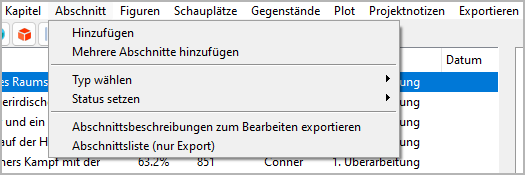
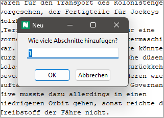
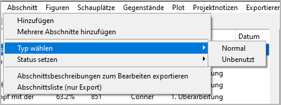
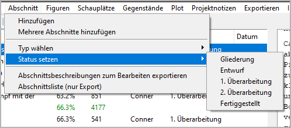

Abschnitt-Menü
Abschnittsfunktionen

Hinzufügen
Einen neuen Abschnitt erzeugen
Mit Abschnitt > Hinzufügen können Sie einen Abschnitt in den Baum einfügen.
Der neue Abschnitt wird an die nächste freie Stelle nach der Auswahl gesetzt, falls möglich.
Andernfalls wird kein Abschnitt erzeugt.
Der neue Abschnitt hat einen automatisch erzeugten Titel. Sie können ihn im rechten Bereich der Arbeitsfläche ändern.
- Eigenschaften eines neuen Abschnitts:
Typ: Normal
Fertigstellungsstatus: Gliederung
Keine Perspektivfigur zugewiesen
Keine Plotlinie zugewiesen
Keine Tags
Keine Angaben zu Datum, Zeit und Dauer
Mehrere Abschnitte hinzufügen
Mehrere neue Abschnitte auf einmal erzeugen

Mit Abschnitt > Mehrere Abschnitte hinzufügen können Sie dem Baum bis zu 20 Abschnitte hinzufügen.
Sie werden nach der Anzahl der neuen Abschnitte gefragt.
Die Anzahl der neuen Abschnitte ist auf 20 begrenzt.
Die neuen Abschnitte werden an die nächste freie Stelle nach der Auswahl gesetzt, falls möglich.
Andernfalls wird kein Abschnitt erzeugt.
Typ wählen
Den Typ der ausgewählten Abschnitte ändern
Mit Abschnitt > Typ wählen können Sie den Typ der ausgewählten Abschnitte zu Normal oder Unbenutzt ändern.

Hinweis
- Um den Typ für mehrere Abschnitte gleichzeitig zu ändern:
Entweder mehrere Abschnitte auswählen, oder
das Kapitel auswählen.
Status setzen
Den Fertigstellungsstatus des Abschnitts ändern

Mit Abschnitt > Status setzen können Sie den Fertigstellungsstatus der ausgewählten Abschnitte zu Gliederung, Entwurf, 1. Überarbeitung, 2. Überarbeitung oder Fertiggestellt setzen.
Hinweis
- Um den Status für mehrere Abschnitte gleichzeitig zu ändern:
Entweder mehrere Abschnitte auswählen, oder
einen Elternknoten (Kapitel oder Buch) auswählen.
Abschnittsbeschreibungen zum Bearbeiten exportieren
Ein ODT-Dokument exportieren
Mit Abschnitt > Abschnittsbeschreibungen zum Bearbeiten exportieren
können Sie ein Textdokument erzeugen, das eine
vollständige Inhaltsangabe mit Teile-/Kapitelüberschriften
und Abschnittsbeschreibungen enthält.
Dieses Dokument kann mit Writer bearbeitet und zu novelibre
zurückgespielt werden.
Der Dateinamenszusatz lautet _sections_tmp.
Abschnittsliste (nur Export)
Ein ODS-Dokument exportieren
Mit Abschnitt > Abschnittsliste (nur Export) können Sie ein Tabellenkalkulationsdokument mit einer Zeile pro Abschnitt und den folgenden Spalten:
Abschnitts-ID (eingeklappt)
Abschnittsnummer (Hyperlink zum Manuskript)
Titel
Beschreibung
Perspektivfigur (Kurzname)
Datum
Zeit
Tag
Dauer
Tags
Abschnittsnotizen
Szene
Ziel
Konflikt
Ausgang
Fertigstellungsstatus
Fortlaufende Wortzählung
Wortzahl des Abschnitts
Figuren
Schauplätze
Gegenstände
Bemerkung
Nur „normale“ Abschnitte erscheinen in der Abschnittsliste. Abschnitte vom Typ „unbenutzt“ werden ausgelassen.
Der Dateinamenszusatz lautet _sectionlist.